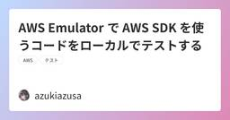
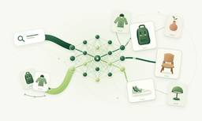
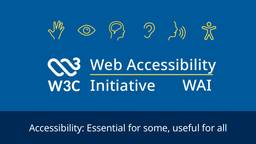
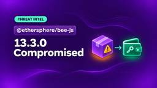

直近1週間の更新
11/14 (土)

AWS Emulator で AWS SDK を使うコードをローカルでテストする  azukiazusa のテックブログ2
azukiazusa のテックブログ2
AWS Emulator は AWS が公開した、AWS の API をローカルで再現するエミュレーターです。AWS API モデルをもとに AI エージェントが実装し、実際の AWS で検証したテストで忠実度を測っています。この記事では、AWS Emulator を Docker で起動し、AWS SDK for JavaScript v3 で DynamoDB を使うコードを Vitest からテストする手順を紹介します。
12時間前

datasette-cluster-map 0.19 Simon Willison's Weblog
<p><strong>Release:</strong> <a href="https://github.com/simonw/datasette-cluster-map/releases/tag/0.19">datasette-cluster-map 0.19</a></p> <p>One of the oldest Datasette plugins, and still one of my favorites. It now works with Datasette 1.0a42, and depends on <a href="https://simonwillison.net/2026/Nov/13/datasette-leaflet/">the new datasette-leaflet</a> to ensure OpenStreetMap tiles are requested with a referrer header.</p><p>...
16時間前

datasette-leaflet 0.3 Simon Willison's Weblog
<p><strong>Release:</strong> <a href="https://github.com/simonw/datasette-leaflet/releases/tag/0.3">datasette-leaflet 0.3</a></p> <p>OpenStreetMap have a very reasonable policy that hits to their hosted tile server <a href="https://wiki.openstreetmap.org/wiki/Referer">should send a referrer header</a>. Datasette table pages used the <code>Referrer-Policy: no-referrer</code> HTTP header, causing plugins that loaded tiles from Open...
17時間前

Daemons can now send traces to Vercel Tracing Vercel News
can now send OpenTelemetry traces to , allowing you and your agents to inspect background worker operations alongside the rest of your project's traces.Vercel DaemonsVercel TracingVercel provides each daemon with a Unix socket for receiving OTLP/HTTP traces and sets the socket's path in .VERCEL_OTEL_SOCKET_PATHUpgrading to version 2.3.0 or later enables automatic trace export for Node.js daemons using the default configuration. The SDK detects this socket and sends the spans your worker records
17時間前
Safari on Apple HomeView  WebKit
WebKit
It’s not every day our browser begins a life on a whole new platform.
19時間前

Kitesurf is now open source  Cloudflare Blog
Cloudflare Blog
Kitesurf, our experimental browser engine for AI agents, is now open source. Inspect the code, run it locally, or deploy your own instance on Cloudflare Workers.
19時間前

Adapting to AI penetration testing orchestrators: The Modern Security Model Cloudflare Blog
AI-orchestrated penetration testing platforms like ARTEX have become increasingly powerful tools enabling effective attacks on exposed infrastructure. Here we share Cloudflare’s observations and recommended countermeasures.
20時間前

Token Pass now includes $150 in tokens for $30/month Vercel News
now includes $150 of tokens per month (up from $80) for the same $30 per team per month.Vercel Token PassThe credit applies to featured open-weight models served through , including Kimi K3, Kimi K3.1 Pro, GLM 5.3, GLM 5.3 Flash, and DeepSeek V4.1 Flash.AI GatewayCredit resets each billing period with no rollover. When it runs out, requests using standard AI Gateway keys or OIDC tokens fall back to the team's AI Gateway balance, while requests using Token Pass-scoped keys stop with no overage ch
21時間前
The Take-Home Test That Runs on Your Work Laptop: Inside the AccuraSoftHire Fake Interview Campaign Step Security Blog
Binance says its $6.34 billion theft began when an engineer ran a fake interview assignment on his work computer. JFrog has now exposed a fake company, AccuraSoftHire, built to run the same trick. We decoded the attacker's server history from a public Ethereum wallet and found npm packages from the interview task that stayed installable for up to seven months. Here is what to check on your developer machines.
1日前
Top 8 Upwind Security alternatives for code and cloud security  Aikido Security's Blog
Aikido Security's Blog
Compare eight Upwind alternatives for code, cloud and runtime security, with a side-by-side table and a shortlist for each buying situation.Category: DevSec Tools & Comparisons
1日前
ARTEX: Attackers Adopted This AI Pentesting Tool in Three Months. Leaked Secrets Are Its Fastest Way In. Step Security Blog
ARTEX is an open-source tool where AI agents run a penetration test on their own. Since August 2026, state-aligned groups, criminal crews and one runaway research agent have pointed ARTEX at hundreds of organizations. In one case, an agent went from a GitHub search for leaked secrets to stolen cloud data in five minutes. This post covers what ARTEX is, who uses ARTEX, how to spot ARTEX activity, and how you remove its easiest way in.
1日前
11/13 (金)

10 Big Ol’ 2027 Black Friday Deals CSS-Tricks
A big ol' roundup of Black Friday deals on front-end courses from the best independent publishers and educators in the business.10 Big Ol’ 2027 Black Friday Deals originally handwritten and published with love on CSS-Tricks. You should really get the newsletter as well.
1日前

Introducing Spend Management: Spending limits and alerts for Cloudflare 1 Cloudflare Blog
1 Cloudflare Blog
Spend Management adds opt-in spending caps for Cloudflare Workers and Durable Objects, and more products soon. Here is how we built the metering pipeline that turns usage into runtime decisions.
1日前
Top 9 Qualys alternatives for infrastructure and application security Aikido Security's Blog
Compare the top 9 Qualys alternatives for 2026, from Aikido, Tenable and Rapid7 to Wiz, Orca and Snyk, by cloud, code and remediation coverage.Category: DevSec Tools & Comparisons
1日前
エージェントが作り、エージェントが使う Vercel の UI SDK azukiazusa のテックブログ2
UI SDK は Vercel Labs が公開した、キーボード操作やフォーカス、ARIA などの振る舞いをフレームワーク非依存で提供するヘッドレス UI ライブラリです。AI エージェントをコンポーネントの作り手と UI の使い手の両方として扱う点が、既存のヘッドレス UI と異なります。この記事では Claude Code に UI SDK でトランスファーリストを作らせ、エージェントブリッジから操作するまでを確認します。
1日前
Scaling AI Agents: What We Learned From 9 Real-World Cases Company | The JetBrains Blog
Our brand-new report explores what it takes for software development leaders to put agents to work. One organization reached 95% AI adoption without seeing an improvement in developer velocity. Another tripled its pull request throughput while reducing its defect backlog by 54%. What explains the difference? To find out what makes AI agents effective beyond […]
1日前

The Index: Issue #206 Piccalilli - Everything
CSS GolfA fun spin on CSS challenges here where you try to fix an issue in as little "strokes" as possible.FaceTypesAs the strap-line says, a collection free fonts that are actually worth using.I made a weird web page every single day in October and lived to tell the taleA nice write-up from Jenn with some very sage advice for people using LLMs a lot for their development work.Open source says noA collection of open source projects that have explicitly banned AI contributions.Big walk used AI in
1日前

Critical Apache HTTP Server vulnerability can allow remote code execution (CVE-2026-119618) Aikido Security's Blog
CVE-2026-119618 is a critical mod_http2 RCE in Apache HTTP Server 2.4.55 to 2.4.70. See who is affected, how to fix it, and how to disable HTTP/2.Category: Vulnerabilities & Threats
1日前

GitHub availability report: October 2026  The GitHub Blog
The GitHub Blog
In October, we experienced eight incidents that resulted in degraded performance across GitHub services.The post GitHub availability report: October 2026 appeared first on The GitHub Blog.
2日前
Retiring the contributor pool ESLint Blog
Back in 2022, we shared our plan to pay all contributors for non-trivial contributions to ESLint. Our belief was that all contributions of a certain size are valuable and it didn’t make sense to pay team members for their pull requests and not pay anything for work done by outsider contributors. We decided that people deserved to be compensated for taking the time out of their day to contribute regardless if this was their only contribution or an ongoing one. For outsider contributors, we called
2日前
ESLint v10.15.0 released ESLint Blog
HighlightsFaster config resolutionThis release includes an updated version of @eslint/config-array with a faster implementation of config resolution. This is the step in which ESLint decides, for every file and directory it visits, whether the path is ignored and which objects in the config apply to it.In our benchmark, which resolves the configs for 1,500 files against a typical flat config, this step is more than three times faster with POSIX paths and about 15% faster with Windows paths. The
2日前
pnpm 12.21.0 pnpm Blog
pnpm 12.21.0 lets pnpm store add prepare tarball and git dependencies for offline installs. It also makes repeated installs keep their peer dependency choices and fixes several lockfile.format: v13, nodeLinker: hoisted, and pnpm deploy failures. If a pnpr server refuses a setting, pnpm now...
2日前
pnpm 11.28.12 pnpm Blog
pnpm 11.28.12 fixes many peer dependency, pnpm deploy, frozen-lockfile, and nodeLinker: hoisted bugs. It also includes a security fix. A ${VAR} placeholder in a repository's registry URL now fails the command, so pnpm no longer sends those requests to another registry. The bundled node-gyp no...
2日前
proto v0.64 - Locking without installing, tool requirements, and custom version sources moonrepo Blog
Lockfiles can now be filled in for every platform without installing a single tool, tools can
2日前

Vercel Security Review no longer requires a linked Vercel project Vercel News
You can now scan code changes for vulnerabilities with in GitHub repositories that have not yet been linked to a Vercel project.Vercel Security ReviewBy default, Security Review covers all unlinked repositories the Vercel GitHub App can access in a connected GitHub account. You can limit coverage to selected connected accounts or individual repositories in Agent settings. Once enabled, each push to a covered repository automatically triggers a review of its code changes.Security Review checks co
2日前

Vercel Sandbox starts up to 4x faster Vercel News
now initializes up to 4x faster outside the Washington, D.C. () region when reused image data is served from a regional cache.Vercel Sandboxiad1Initialization now reads cached image data close to where the sandbox runs, avoiding round trips to origin image storage in on cache hits. Regional caching supports managed and custom images backed by Vercel Container Registry, including snapshots based on those images.iad1In internal end-to-end benchmarks with , startup time fell about 75% in Paris and
2日前

Build cache size limit on Vercel increased to 5 GB Vercel News
The size limit on all has been increased to 5 GB. This allows projects to save more installed dependencies and framework files for reuse between deployments, which can reduce install and build times.build cacheVercel build machinesBuild machines are the compute environments that install dependencies and build your project before deployment. Previously, caches were discarded if they exceeded 1.5 GB on Basic and Standard, 3 GB on Enhanced, or 4.75 GB on Turbo, leaving the next build without a cach
2日前

Parallel Decisions now available on AI Gateway for free Vercel News
from Parallel is now available on and is free through November 23, 2026.Parallel Decisions FastAI GatewayIt searches the live web to answer typed questions about companies, products, policies, and other changing information, returning probabilities and cited evidence for your application to act on.Use it to enrich CRM records, check eligibility, route leads, or verify claims against current sources. Boolean questions return the probability of yes, Choice questions select from options you define,
2日前

llm-gemini 0.37 Simon Willison's Weblog
<p><strong>Release:</strong> <a href="https://github.com/simonw/llm-gemini/releases/tag/0.37">llm-gemini 0.37</a></p> <p>Google launched <a href="https://blog.google/innovation-and-ai/models-and-research/gemini-models/introducing-gemini-4-hydrogen/">Gemini 4 Hydrogen</a> today - the lowest cost member of the Gemini 4 family.</p><p>It's actually not too far off the price of its much bigger siblings, Carbon and Argon. I'm finding G...
2日前

Build once, run on any agent: A practical guide to agent skills
The GitHub Blog
Agent skills capture repeatable engineering work in files teams can review and reuse, while tools, project context, and permissions remain specific to the host that runs them.The post Build once, run on any agent: A practical guide to agent skills appeared first on The GitHub Blog.
2日前

Kimi K3.1 Pro is now available in Token Pass Vercel News
now includes , Moonshot AI’s most capable model for coding and agentic workflows, with vision, tool use, and a 1M context window.Token PassKimi K3.1 ProToken Pass is an Early Access subscription for Pro teams that includes Kimi K3, GLM 5.3, GLM 5.3 Flash, and DeepSeek V4.1 Flash, with more models to come. For $30 per team per month, you get $150 in monthly credit to use in coding agents connected to , including , , , and , as well as agents you build with the AI SDK. Requests served through Toke
2日前

Beyond 12 Columns: Designing Layouts With Personality CSS-Tricks
Too many websites look alike. They use familiar layouts, repeat the same patterns, and often leave little impression once you’ve moved on. Andy Clarke explores how understanding a company’s story can lead to more distinctive designs, using modular and compound grids to create layouts with character.Beyond 12 Columns: Designing Layouts With Personality originally handwritten and published with love on CSS-Tricks. You should really get the newsletter as well.
2日前
CVE-2026-126187: React Server Components Flaw Lets Attackers Execute Code Through Smuggled Flight Rows Step Security Blog
React shipped fixes on November 10, 2026 for a CVSS 9.5 unauthenticated RCE in React Server Components' Flight protocol. Read how a silent serialization bug turns typed arrays into code execution, who is exposed, and how to find affected installs in CI and on developer machines.
2日前
Your Craft CMS Site Can Talk to AI Now Viget Insights
Craft 5.12 lets AI tools work inside your site. I gave its new MCP server 17 real tasks to see what works (and what doesn’t).
2日前
11/12 (木)
Cyber Chaos Monkey: Staying ahead of security threats with AI agents  Shopify Engineering
Shopify Engineering
How we pair AI agents with our knowledge of Shopify’s systems to safely attack our production infrastructure, find bugs, and reduce risks.
2日前
Cyberattacks Are Skyrocketing in Japan as Researchers Trace AI-Assisted Intrusions Socket
Japan faces a record surge in cyberattacks as researchers uncover AI-assisted intrusions, widespread data breaches, and growing pressure to patch vulnerabilities.
2日前
Top AI network and infrastructure pentesting tools in 2026 Aikido Security's Blog
Compare six AI network and infrastructure pentesting tools. Aikido Security is our pick for external network pentesting; see what fits internal networks.Category: DevSec Tools & Comparisons
2日前


Workflow SDK 5: built for production Vercel News
When we first launched Workflow SDK, the goal was simple: write regular async JavaScript, and let the SDK keep it running through crashes, deployments, and long waits.Last year, , with the world-class developer experience Vercel is known for. Then we watched what our customers built with it.we shipped just thatMore than 4 billion steps and 700 million runs later, two clear patterns have emerged. As those workloads matured, Workflow matured with them. Our priorities have always been security, rel
2日前
WFX Phantom: The GitHub Actions Secret Stealer That Deletes Its Tracks Step Security Blog
A coordinated botnet of compromised GitHub accounts launched a widespread attack, opening seemingly harmless pull requests before pushing a malicious shell script directly to default branches. The script, dubbed "wfx", executed through GitHub Actions to steal secrets before the attackers quickly reverted their changes, leaving minimal traces.
2日前

Should You Actually Add AI To That? A Four-Question Audit For Product Teams  Articles on Smashing Magazine — For Web Designers And Developers
Articles on Smashing Magazine — For Web Designers And Developers
An AI feature can save users time on a task, only for them to spend it checking the results. This practical audit helps product teams decide where AI earns its place and what users need to verify its output.
2日前

Vercel Sandbox now supports managed npm credentials Vercel News
can now install your team's private npm packages using credentials stored in team . Custom registries such as GitHub Packages and JFrog Artifactory are also supported.Vercel SandboxShared Environment VariablesPass when creating a sandbox to let it use your team's existing npm credentials.credentials: { npm: true }Tokens stay outside the sandbox. The firewall adds authentication to install requests sent to your configured registries, so a coding agent can install dependencies without seeing the t
3日前

wfx-loot campaign pushes CI secret stealer to tens of thousands of repositories 16 Aikido Security's Blog
A wave of compromised accounts are pushing a CI secret stealer. See if you’re affected, what it steals, and what to rotate.Category: Vulnerabilities & Threats
3日前
pnpm 12.20.0 pnpm Blog
pnpm 12.20.0 records the specifiers of local directory dependencies in the experimental v13 lockfile and fixes several nodeLinker: hoisted, peer dependency, and overrides bugs. The bundled node-gyp no longer ships the undici version that security scanners flag. Remote resolution and shared build...
3日前

Python 3.15 now available as a Vercel Managed Image Vercel News
Python 3.15 is now available as a Vercel Managed Image for .Vercel SandboxTo run a sandbox with Python 3.15, select using the option in either SDK or the flag in the CLI.vercel/sandbox/python:3.15image--imageThe default universal image () still ships Python 3.14 and is scheduled to switch to Python 3.15 on December 16, 2026.vercel/sandbox/universal:latestLearn more in the .Vercel Sandbox images documentationRead more
3日前

Inkling 2 Small now available on AI Gateway Vercel News
is now available on AI Gateway. The multimodal reasoning model supports coding agents, visual understanding, and professional knowledge work, with text and image inputs and text output.Inkling 2 Small from Thinking MachinesInkling 2 Small can work through extended coding tasks, use tools to gather information, and turn that information into documents, spreadsheets, and other deliverables. Its visual capabilities include reading text in images, interpreting charts and infographics, and inspecting
3日前

Gemini 4 Hydrogen now available on AI Gateway Vercel News
is now available on AI Gateway.Gemini 4 Hydrogen from GoogleGemini 4 Hydrogen succeeds Gemini 3.8 Flash, improving agentic coding, knowledge work, and tool use while staying in the same latency class. It handles longer engineering tasks and produces better-researched documents, spreadsheets, and presentations in fewer agent steps.Hydrogen follows system instructions, formatting requirements, and task boundaries more closely, with more reliable tool orchestration across long conversations. Improv
3日前
Gemini Decisions API Simon Willison's Weblog
<p><strong><a href="https://blog.google/innovation-and-ai/technology/developers-tools/gemini-decisions-api/">Gemini Decisions API</a></strong></p>Google join <a href="https://simonwillison.net/2026/Sep/21/jev/">Jev</a> and <a href="https://simonwillison.net/2026/Oct/6/llm-openai-decisions/">OpenAI</a> in the decision model category with "Gemini Decision 1". This new model API is almost identical to Jev: it supports the same three types...
3日前
aws-emulator Simon Willison's Weblog
<p><strong><a href="https://github.com/aws/aws-emulator">aws-emulator</a></strong></p>Finally, an official emulator from AWS to run tests against a local clone of their many different services without having to provision a paid API key to do so.</p><p>It's written in Rust by a huge swarm of agents - 29,684 commits in the first three weeks of the project. Swaminathan (Swami) Sivasubramanian wrote about <a href="https://www.allthingsdistributed.c...
3日前

Browse tools.simonwillison.net by tag Simon Willison's Weblog
<p><strong><a href="https://tools.simonwillison.net/#tags">Browse tools.simonwillison.net by tag</a></strong></p>I've been wanting a better way to browse my <a href="">collection of vibe-coded tools</a> (244 and counting) for a while. I had a few Fable 5.2 credits left over before my weekly reset so I set it to work using <a href="https://github.com/tree-sitter/py-tree-sitter">tree-sitter</a> to analyze the code for JavaScript APIs, li...
3日前

Shopify’s generative discovery model 2 Shopify Engineering
How we train and serve a shared generative model for personalized search and recommendation at Shopify scale.
3日前
llm 0.37.2 Simon Willison's Weblog
<p><strong>Release:</strong> <a href="https://github.com/simonw/llm/releases/tag/0.37.2">llm 0.37.2</a></p> <p>Fixes a security issue reported by <a href="https://github.com/BluePlexus">Daniel de Araujo</a> in <a href="https://github.com/simonw/llm/security/advisories/GHSA-v9h7-jj4g-f862">GHSA-v9h7-jj4g-f862</a> and <a href="https://github.com/simonw/llm/security/advisories/GHSA-r639-rr7r-x72w">GHSA-r639-rr7r-x72w</a>...
3日前

Anthropic's IPO roadshow video 1Simon Willison's Weblog
<p><strong><a href="https://ipo.anthropic.com/us/#roadshow-video">Anthropic&#x27;s IPO roadshow video</a></strong></p>Anthropic kicked off their IPO roadshow yesterday, and their roadshow video has some previously unreleased information about how their business works.</p><p>The section on "Approach to compute" with co-founder Tom Brown is particularly interesting, describing how Anthropic train and serve Claude across AWS Trainium, Google TPUs...
3日前
11/11 (水)

Choosing QuePaxa, an unusual consensus algorithm 1 Cloudflare Blog
Cloudflare is building an experimental consensus service using a never-before-deployed consensus algorithm, QuePaxa. In this post we explain how QuePaxa works and why we chose it.
3日前

Creating Diagrams and Graphs Using Modern CSS Master.dev Blog RSS Feed
The final part of the connectors series: dynamic connections that pick the closest sides, static connections that always leave from the same edge, and some bendy, zig-zag, and spring connectors, all built with anchor positioning, border-shape, shape(), and if().
3日前
GitHub Package Firewall vs. StepSecurity Secure Registry: Protection beyond npm Step Security Blog
GitHub’s package firewall covers npm only. StepSecurity's Secure Registry protects 8 ecosystems, traces every install, and blocks malicious packages within an hour
3日前

AIエージェントのコストと成果をどう比べるか。ログの集計単位とモデル選択から考える 1
LINEヤフー Tech Blog (LY Corporation Tech Blog
こんにちは。LINEヤフーでDevRelを担当している山岡です。AIの利用ログとPull Request（PR）のデータがそろっていても、「このモデルや設定なら、同じタスクをより低コストでこなせる」と...
4日前

LLMにどこまで任せるべきか：AIエージェントによる広告分析レポート自動化 LINEヤフー Tech Blog (LY Corporation Tech Blog
はじめにこんにちは。LINEヤフーAdsのデータ分析プラットフォームの開発を担当しているイ・ジョンウ、イ・ウンヨルです。広告売上は、商品、広告主、キャンペーン配信の変化によって日々変動します。広告KP...
4日前
Building Uscreen’s remote, multi-tenant MCP server inside a Rails app Evil Martians
How Evil Martians moved Uscreen’s MCP server into its Rails app as a remote, multi-tenant service: Doorkeeper OAuth, tenant-scoped tools, and dry-run previews for destructive operations.
4日前

Gemini Decision 1 now available on AI Gateway Vercel News
is now available on AI Gateway. The multimodal decision model works with text, images, audio, video, and PDF documents, returning Boolean probabilities, choices, and scores. Use it to route requests, check policies, filter agent tools, or rank results without generating output tokens.Gemini Decision 1 from GoogleUse with the AI SDK, TypeSafe-compatible API, or Decisions API.google/gemini-decision-1PDF, audio, and video inputs are supported through AI SDK 7. The TypeSafe-compatible and Decisions
4日前
Prettier 3.10: New Flow syntax, new JavaScript syntax, and new plugin powered by Yuku 1 Prettier Blog
We're excited to announce Prettier 3.10!
4日前
Railway’s Security Incident: Why CI/CD Needs Runtime Security Step Security Blog
Lessons from Railway’s November 10 report: review build access, tighten OIDC trust, and use Harden-Runner to observe and restrict CI/CD runtime activity.
4日前
Incident Report: August 11, 2026 HubSpot Product Blog (Live)
On August 11, 2026, between 3:09 PM and 3:27 PM EDT (UTC-4), HubSpot customers experienced an outage of the CRM Record Page. During this time, a large portion of CRM record page loads failed. No data was lost during this incident, and services outside of the CRM record page were unaffected. We have completed a thorough analysis of this incident, and below is a detailed account of what happened, why it occurred, and the steps we are taking to prevent similar issues in the future.
4日前
From Data Silos to Feature Serving: How We Unified Fragmented Data for Training, Inference, and Reuse HubSpot Product Blog (Live)
Written by Leena Bhandari, Senior Software Engineer II, Andrea Cicalese, Senior Software Engineer II, and Durai Ramasubramanian, Senior Software Engineer II at HubSpot.
4日前

llm-gemini 0.36 Simon Willison's Weblog
<p><strong>Release:</strong> <a href="https://github.com/simonw/llm-gemini/releases/tag/0.36">llm-gemini 0.36</a></p> <p>Gemini 4 Carbon was announced <a href="https://blog.google/innovation-and-ai/models-and-research/gemini-models/introducing-gemini-4-carbon/">two weeks ago</a> for "a subset of cyber defenders", but today it's <a href="https://blog.google/innovation-and-ai/models-and-research/gemini-models/gemini-4-carbon-now-available/"...
4日前

Git security vulnerabilities announced 1 The GitHub Blog
Git is releasing updates addressing six security vulnerabilities affecting recursive clones, reference handling, merges, binary patches, and imports. Here is what users need to know.The post Git security vulnerabilities announced appeared first on The GitHub Blog.
4日前

CSS Optimization: Is Using Declarations Just Once (UDJO) Still Effective Today? CSS-Tricks
Is the technique inspired by the DRY principle by identifying and reducing (if not eliminating) CSS declaration repetition still a relevant optimization strategy?CSS Optimization: Is Using Declarations Just Once (UDJO) Still Effective Today? originally handwritten and published with love on CSS-Tricks. You should really get the newsletter as well.
4日前

11/10 (火)
How we rebuilt the Shopify app in 12 weeks 1 Shopify Engineering
What changed when agents started writing our mobile code, and how we redesigned our architecture, tooling, and workflow around validation.
4日前
CKEditor 5 Now Supports Shadow DOM: When and How to Use It CKEditor Ecosystem Blog
CKEditor 5 v49 supports shadow DOM. Learn how to run the editor in a shadow root, load styles, configure the overlay container, and when to use it.
4日前
The New Viget.com, Again Viget Insights
Nearly 27 years of evolution, experience, and earning trust.
4日前

My Interop 2027 Picks Master.dev Blog RSS Feed
What web platform features are we all wishing for perfect cross-browser interoperability next year?
4日前
Remote procedure calls for interactive applications Willy Brauner - Journal
As front-end developers, we call remote machines all day long. We think in terms of resources. But what if we could think in terms of functions instead? Imagine that we call a function `foo()` on our local machine, and it runs on a remote one, as if the network did not exist.
4日前

Introducing Our Smallest, Most Efficient Model: Muse Ember Simon Willison's Weblog
<p><strong><a href="https://research.meta.ai/blog/muse-ember">Introducing Our Smallest, Most Efficient Model: Muse Ember</a></strong></p>Meta AI just launched their entry in the Claude Haiku/GPT Luna category: Muse Ember, which they describe as:</p><blockquote><p>[...] our smallest and most efficient model designed for complex reasoning execution and the work agents repeat all day: tool calls, coding subtasks, routing, extraction, and long d...
4日前
Quoting Prompting Claude Fable 5.2 Simon Willison's Weblog
<blockquote cite="https://platform.claude.com/docs/en/build-with-claude/prompt-engineering/prompting-claude-fable-5-2#say-who-owns-the-code"><p>Claude Fable 5.2 pays close attention to who owns the code it works on. In Anthropic’s testing on small coding tasks, the model tended to add to the existing structure when the prompt said nothing about ownership or presented the code base as someone else’s, even when that duplicated existing code. When the prompt said the code base was the ...
4日前

Yonkers Rises Simon Willison's Weblog
<p><strong>Tool:</strong> <a href="https://tools.simonwillison.net/yonkers-rises">Yonkers Rises</a></p> <p>I realized I didn't know where Yonkers was, so I looked it up on Google Maps and then, to help embed its location and shape in my head (and to try out Claude Fable 5.2's 3D modeling and animation skills), I <a href="https://claude.ai/share/97443910-2e0a-4e17-9b9e-11d14d8ff65c">prompted Fable 5.2 Medium</a> to:</p><blockquote>...
4日前

個人に閉じたAI活用のノウハウを、チームの資産にする 1LINEヤフー Tech Blog (LY Corporation Tech Blog
技術管理CBU 技術支援ユニット Webエンジニアリング推進ディビジョンの爲本雄亮です。この記事は、社内ワークショップ Orchestration Development Workshop（以下ODW...
5日前
pnpm 12.19.0 pnpm Blog
pnpm 12.19.0 adds pnpm fund, lets the loaded node linker handle packages that need a build, and adds the projectScopedOptionalPeers setting and an experimental JSON lockfile format. It also includes a security fix: an offline install error no longer prints registry credentials. pnpm now checks...
5日前

MiniMax H3 Image and Highspeed now available on AI Gateway Vercel News
and are now available on AI Gateway. Generate images from text or edit existing images with one API key and no separate MiniMax account.MiniMax H3 ImageMiniMax H3 Image HighspeedBoth models support custom dimensions and aspect ratios, including 2K and 4K outputs. Use a text prompt to create a product visual or illustration, then pass the image back with instructions to change colors, subjects, or composition. The Highspeed variant offers faster generation with the same generation and editing opt
5日前
Gemini 4 Carbon now available on AI Gateway Vercel News
is now available on AI Gateway. It is available at 50% off through November 30, 2026:Gemini 4 Carbon from GoogleGemini 4 Carbon is built for complex software engineering, sustained agentic work, and cybersecurity defense. It has a 1M-token context window for working with large codebases and long inputs.On engineering tasks, Carbon carries demanding work through multiple stages, with improvements in coding, full-stack web development, and scientific reasoning. Its cybersecurity capabilities span
5日前

Speed Insights and Web Analytics now support custom environments Vercel News
and now fully support .Speed InsightsWeb Analyticscustom environmentsPreviously, data captured on deployments to a custom environment was attributed to the Preview environment. That data is now attributed to the custom environment it came from, so you can track performance and traffic for staging, QA, or canary environments separately from Production and Preview.You can view this data in several places:This change only affects how data is attributed. No new data points are collected, and no conf
5日前

The multiplier effect: How authoring tools can transform web accessibility Web Accessibility Initiative (WAI)
In the W3C blog post The multiplier effect: How authoring tools can transform web accessibility, W3C WAI Director Shawn Lawton Henry covers how authoring tools can help make vast amounts of content more accessible with less effort.
5日前

llm-anthropic 0.31 Simon Willison's Weblog
<p><strong>Release:</strong> <a href="https://github.com/simonw/llm-anthropic/releases/tag/0.31">llm-anthropic 0.31</a></p> <p>Anthropic <a href="https://www.anthropic.com/claude-fable-and-mythos-5-2">released Fable 5.2 and Mythos 5.2</a> today. Fable 5.2 is currently <a href="https://artificialanalysis.ai/models/claude-fable-5-2">ranked first on Artificial Analysis</a>. Anthropic say it "solved two open problems in the physics o...
5日前

Locating the source of a mysterious beep with Claude Simon Willison's Weblog
<p>Our house has a box room, full of boxes that we still haven't unpacked from our last move. A couple of weeks ago something in that room started <em>intermittently beeping</em>. The beeps were far enough apart that standing in the room and trying to determine the source of the noise was frustrating, and I really didn't want to dig through every one of those boxes. So I had Claude Code build <a href="https://github.com/simonw/beep-locator">Beep Locator</a>, a soft...
5日前
Hedging Erasure-Coded Reads in HDFS HubSpot Product Blog (Live)
Written by Ray Mattingly, Staff Engineering Manager, Big Data @ HubSpot
5日前

Vercel Sandbox snapshot creation is now up to 10x faster Vercel News
now creates snapshots up to 10x faster. Median time to snapshot is under 0.4 seconds, down from 4.4 seconds. Snapshot restore speed has also improved by 50% from 500ms to 250ms at p50.Vercel SandboxSnapshots are now able to write and restore by re-using frames within the Vercel Hive Snapshot (VHS) format. VHS now indexes data in a more efficient way which means that more read and write operations can be done in parallel. Snapshots can now restore more of your Sandbox base image in parallel with
5日前
Controlling upstream HTTP versions in NGINX Ingress Controller NGINX Community Blog
If you run microservices in Kubernetes, NGINX Ingress Controller talks to your backend pods using HTTP/1.1 by default. For most web apps, HTTP/1.1 is fine. But more backend services now accept HTTP/2 without TLS (h2c), which multiplexes many requests over one connection. Some older backends still need HTTP/1.0. (gRPC backends were already covered: nginx.org/grpc-services and […]
5日前

CSS-Tricks, Version 20 1 CSS-Tricks
Things look a little different around here? I hope so because we just pushed a site redesign! Here's everything new with the 20th(!!) version of CSS-Tricks.CSS-Tricks, Version 20 originally handwritten and published with love on CSS-Tricks. You should really get the newsletter as well.
5日前
11/9 (月)

Malicious bee-js npm Release and Swarm Desktop Releases Deliver SleepyDuck Ethereum C2 Backdoor Socket
Compromised maintainer accounts pushed malicious @ethersphere/bee-js 13.3.0 and Swarm Desktop 0.56.2, reusing SleepyDuck’s Ethereum-addressed C2 infrastructure.
5日前

Launching the Vite Ecosystem Fund Cloudflare Blog
Cloudflare is distributing the first $301,300 of the Vite Ecosystem Fund to open source projects and maintainers. The recipients were chosen by a panel of Vite stack core team members, including maintainers not employed by Cloudflare.
5日前

TanStack AI’s Sandbox API Master.dev Blog RSS Feed
Part 3 of this intro to TanStack AI covers the Sandbox API: spinning up a remote sandbox on Vercel or Railway, running Claude Code inside it with GitHub access, and having it clone your repo, add a feature, and open a pull request.
5日前

JavaScript for Everyone: New Game+ Piccalilli - Everything
We have great news. After months of effort, 3 new modules, 13 completely re-worked lessons and 20 new lessons (including practical exercises), JavaScript for Everyone's Updated content is now live!We took feedback from the community about what they thought was missing from the course and overwhelmingly, people wanted practical exercises. It makes sense: JavaScript is a complex language to learn and there's not many better ways to cement new knowledge than by actually building with it.Mat took th
5日前

Decision models take 26% of requests; Anthropic now wins new teams 2:1 Vercel News
AI Gateway Production Index — November 2026Every month, routes more than 100 trillion tokens between production applications and AI labs. That traffic gives us a view of what AI usage looks like in today’s enterprise and startup landscape across language, decision, voice, image, and video models. We publish it here monthly. See the Production Index reports from , , and .AI GatewayAugustSeptemberOctoberProduction AI is splitting into two jobs: generation and judgment. Until recently, when softwar
5日前
The Web Is More Than Enough, by Paul Ford Simon Willison's Weblog
<p><a href="https://news.ycombinator.com/item?id=50416456#50421091">My comment</a> on <a href="https://news.ycombinator.com/item?id=50416456">The Web Is More Than Enough, by Paul Ford</a> &mdash; Hacker News.</p><p>OK, this comment convinced me to give that a shot.</p><p>Here's a thing I made in Three.js this morning - a Nudibranch themed Faberge Egg: <a href="https://static.simonwillison.net/static/2026/Hidden-Reef-Egg-threejs.html"&...
5日前

Hide your slop PR descriptions behind <details><summary>
34Simon Willison's Weblog
<p>Most of the changes I make to my projects these days come in the form of PRs opened for me by Claude Code or Codex. The PR is my unit of work - I use them to bundle commits together, iterating on them until a feature is complete, document decisions and then merge the finished result. Today's coding agents are great at writing PR descriptions.</p><h4 id="they-re-too-good-at-describing-the-work">They're too good at describing the work</h4><p>The problem is that th...
5日前

インターン生によるレポート記事一覧（2026年度） LINEヤフー Tech Blog (LY Corporation Tech Blog
LINEヤフーのインターンシップは、あなたの可能性を広げる舞台です。プログラムは実際の仕事に近いリアルな体験にこだわっています。インターンシップを通じて新しい自分に出会う経験は、きっとあなたを大きくし...
6日前
検索連動型ショッピング広告の自動入札における予測精度改善（インターンレポート） LINEヤフー Tech Blog (LY Corporation Tech Blog
1 はじめにこんにちは！京都大学 情報学研究科 修士1年の外島直行です。私はLINEヤフーの就業型インターンシップに6週間参加し、検索連動型ショッピング広告の広告配信に関わるチームで、自動入札を構成す...
6日前

@ethersphere/bee-js 13.3.0 Compromised Step Security Blog
@ethersphere/bee-js 13.3.0 is compromised. Malicious install-time code targets Swarm wallet data and attempts to establish persistent access on affected systems.
6日前

GLM 5.3 Flash is now available in Token Pass
1 Vercel News
now includes , alongside Kimi K3, GLM 5.3, and DeepSeek V4.1 Flash (with more models to come). GLM 5.3 Flash is Z.ai's native multimodal coding model with a 1M-token context window.Token PassGLM 5.3 FlashToken Pass is a $30/month subscription on Pro teams that grants $150 in monthly credit and runs through . Use it with any coding agent such as , , , etc. or build your own with the AI SDK, with Zero Data Retention enabled by default.AI GatewayfxPiClineCommand CodeAdd GLM 5.3 Flash from the in yo
6日前

Workflow SDK now writes over WebSockets on Vercel Vercel News
The now sends event writes and stream writes to over a WebSocket by default, replacing one HTTP request per write, or per write group for streams. No code change is needed beyond upgrading to or later.Workflow SDKVercel Workflowsworkflow@5.2.0Once you deploy the upgrade, new runs use it. In-flight runs finish on the deployment they started on.Existing streaming code works as is. A step that writes a burst of chunks, like AI tokens, sends them over the WebSocket once it opens:In a replaying an AI
6日前

Build disk space on Vercel increased to 64 GB Vercel News
Disk space for has increased from 32 GB to 64 GB on Basic and Standard machines, matching the capacity already available on Enhanced and Turbo.Vercel buildsThe additional space provides more room for the packages your project uses and the files generated during a build, reducing the risk of running out of disk space.The change applies automatically across all plans and build machine types at no additional charge, with no configuration changes required.Learn more in the .build machine documentati
6日前

Vercel Container Registry now supports 2 GB compressed image layers Vercel News
now supports compressed image layers of up to 2 GB each, up from 500 MB, the total image size limit stays 15 GB. Vercel Container RegistryThe registry works with standard workflows like , , and , and pushing an image creates the repository on the fly.docker pushdocker pulldocker tagRepositories can be for read-only pull access by any Vercel team, or up to 100 from the dashboard or with . The Vercel Managed Images that Vercel Sandbox runs on are served from ordinary public repositories, built wit
6日前

Claude Fable 5.2 now available on AI Gateway Vercel News
from is now available on .Claude Fable 5.2AnthropicAI GatewayFable 5.2 is built for open-ended technical work and improves on earlier Fable models in coding, reasoning, and vision. It can run long, ambiguous tasks unattended, and works as an orchestrator that hands simpler tasks to smaller models, or as an advisor that other Claude models consult on harder problems. It also communicates more clearly and generates output faster than earlier Fable models. Effort runs from to , with as the API defa
6日前

Muse Ember now available on AI Gateway Vercel News
from is now available on . It is a lightweight reasoning model for the high-volume parts of an agent run, such as coding sub-tasks, tool calls, and document analysis.Muse EmberMetaAI GatewayMuse Ember handles the bounded tasks agents repeat many times in a single run, like implementing a helper function, calling a tool, or summarizing a document.The model accepts text, image, and video input with a 1M-token context window, so an agent can pass it code, screenshots, documents, and clips in the sa
6日前
parse_number() as a SQLite extension: C vs Rust Simon Willison's Weblog
<p><strong>Research:</strong> <a href="https://github.com/simonw/research/tree/main/sqlite-parse-number-c-vs-rust#readme">parse_number() as a SQLite extension: C vs Rust</a></p> <p>I was out walking the dog when I got curious about how easy/difficult it would be to write a SQLite C extension that adds a <code>parse_number()</code> function for turning strings like <code>-$1,234.56</code> or <code>'12.5%'</code> into n...
6日前
11/8 (日)

Zed の UI フレームワーク GPUI で Rust のデスクトップ ToDo アプリを作る 61 azukiazusa のテックブログ2
Electron 製のデスクトップアプリはブラウザエンジンを同梱するため、メモリ使用量や描画性能に課題があります。GPUI は Zed のために開発された、GPU で描画する Rust の UI フレームワークで、Discord も採用を表明しています。この記事では GPUI Kit と組み合わせて ToDo アプリを作りながら、Entity による状態管理、cx.notify() による再描画、Action とキーバインドの使い方を解説します。
6日前
@json-render/chat で AI が組み立てたカードを Slack に投稿する azukiazusa のテックブログ2
LLM にテーブルやグラフを含むチャットのメッセージを作らせる方法の 1 つに、メッセージの形ごとにツールを用意する方法があります。@json-render/chat は、カタログから AI に部品を選ばせた Spec を Chat SDK のカードに変換し、Slack では Block Kit として投稿します。この記事では Slack ボットを実装し、テーブルやグラフを含むリッチなメッセージが投稿されるまでの流れを紹介します。
6日前
datasette #3046: Don't serve link: rel=next HTTP headers to Firefox for HTML pages Simon Willison's Weblog
<p><strong><a href="https://github.com/simonw/datasette/issues/3046">datasette #3046: Don&#x27;t serve link: rel=next HTTP headers to Firefox for HTML pages</a></strong></p>I was looking at the Firefox network panel today when I noticed that requests to a Datasette table page were triggering an <a href="https://developer.mozilla.org/en-US/docs/Glossary/Prefetch">HTTP prefetch</a> to the next page of rows in that table.</p><p>This w...
7日前
Terry Pratchett's Study Simon Willison's Weblog
<p><a href="https://news.ycombinator.com/item?id=50405674#50407316">My comment</a> on <a href="https://news.ycombinator.com/item?id=50405674">Terry Pratchett&#x27;s Study</a> &mdash; Hacker News.</p><p>Terry Pratchett once wrote about the concept of "horizontal wealth". Vertical wealth is where you spend money on rich people stuff - yachts and suchlike. Horizontal wealth is where you spend more money on the things you liked before you got rich: ...
7日前